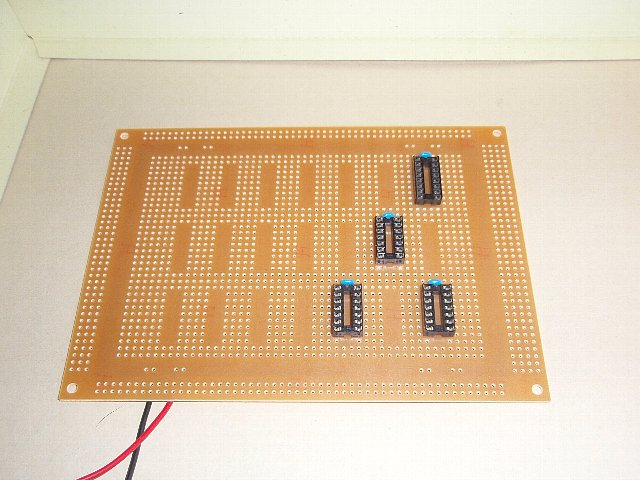
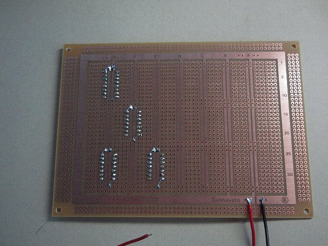
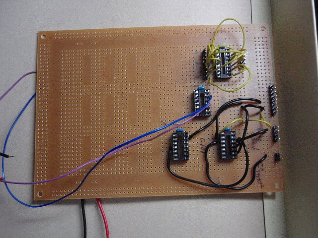
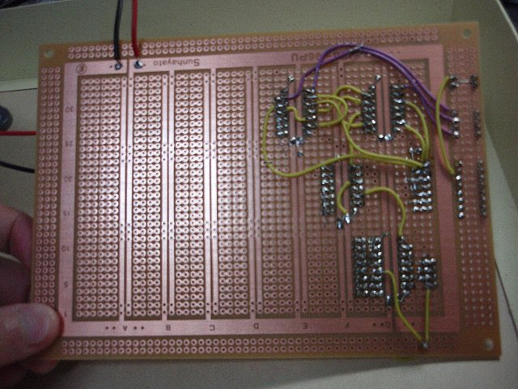
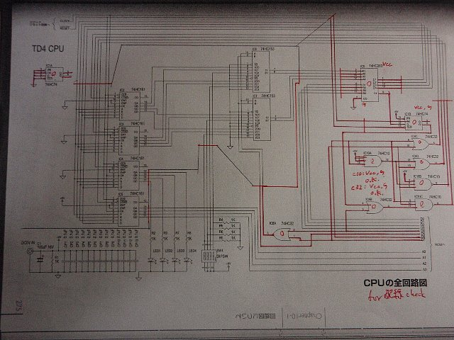

カテゴリ: 読書
- [ Prev ]
- [ Next ]
- [ 読書メモ/「CPUの創りかた」 ]
今日は
- 工具の購入
- ALUと命令デコーダ、ただし配線のみ
を終えました。
後日工具についてはまとめますが、とりあえずワイヤストリッパの径が合ってなかったのと、モジュール間をつなぐときに使うコネクタとピンは昨日購入したのですが、圧着式のやつだったので、圧着ペンチが無かったので、昨日に引き続き秋葉原まで午前中はお買い物に行ってきました。
昨日１セット作ったコネクタは、無理やり半田付けででっちあげたやつです。
今日はALUと命令デコーダを作ることにします。
とりあえず、秋葉原から帰ってお昼ごはんを食べたあと、まずはICソケットの位置決めです。30分ほど悩んだ末、こんな感じに配置しました。

裏面：

で・・・ここからが、予想よりも大変でした。
まずALUの配線ですが、入力用の4pin二つ＋出力用の4pin１つの計12ラインを配線します。ところが配線がとびとびになってしまい、裏面を通すのを早々に諦め、表からワイヤでつなげることに。
この時点で既に16時を回ってる。
さらにこの後、回路図といったりきたりしながら、回路図の配線を実際の配置に合わせて調整し、半田付けしていきます。
そして夜中の9時、ようやく配線「だけ」終わりました。

裏面：

表だけ・裏だけでは配線を引ききれなかったので、裏表両面で引き回しました。
配線「だけ」ではありますが、一応テスタで一通りチェックはしました。

今日の反省、というかまだまだ準備不足だった点：
正直、ALUや命令デコーダ周りの配線を甘く見てました。回路図は論理ゲートで表現されています。ピン番号は表記してくれているので、要はICの各pinをつなげてけばいいだけなんですが、2点間だけではなくて他のpinにも線が延びてる箇所もあります。表と裏をひっくり返しては眺め、ひっくり返しては眺めして、「え～っと、このpinはこのpinとあのラインにつながってるから、周辺のスペースも考えて、どこでつなげるか・・・」と何度も何度も頭を捻ることになりました。
一番の準備不足が、「単芯の細い配線材」が手持ちに無かった点です。唯一の単芯が、上の写真の表面で使われてる、黒い中ぐらいの太さの配線材でした。
細い配線材はみんな「より線」なので、なかなか基盤の表から裏へ通しづらい。先に裏側の穴に半田を盛っておいて、表からワイヤを押し当てつつ、裏側で半田ごてを当てて半田を溶かして貫通させようとしたのですが、より線が毛羽立ってしまったり、途中で折れ曲がってしまったりしてなかなかすんなり貫通してくれません。これが失敗というか、時間を取られた原因です。
いや～、手持ちに確か単芯の細線あったよな・・・と思ってたのですが、無かったですね。よくよく思い出したら、あまりにも便利だったため、あっというまに使い切ってしまった事を思い出しました。
残ってたのは、黒い中太単線のみ。泣く泣く後半、命令デコーダの表面でそれを使いました。
動作確認はまだ行わないことにします。レジスタ部分も一通り配線が終わった後、モジュールごとにICを指していってじっくりと動作確認を行う予定です。
ただし、今日の作業で半田と半田吸い取り線のストックが無くなりました。また、上に書いたように単芯の細線が無いと苦労するので、明日もう一度秋葉原の千石電商に買出しに行くことにします。三日連続で買出しに行くことになります・・・。手際が悪いなぁ。
明日はレジスタ部分の配線で終わりそうです。本当ならそのまま各モジュールの動作確認まで進みたい、というか進めれば進みたいのですが、ちょっと用事がありまして夕方～夜まで抜けます。
明日の買出しはすぐ済みます・・・とはいえ、やはり昼間では家に戻って来れないでしょうから、お昼過ぎ～夕方頃までに、なんとかレジスタ部分の配線が終わると良いなぁ。レジスタ部分の配線は、回路図を見る限りはそんなに「飛び飛び」になってるようには見えませんので、流れに乗ってしまえば楽だと・・・いいんですけど。
- [ Prev ]
- [ Next ]
- [ Up ]
- [ 読書メモ/「CPUの創りかた」 ]